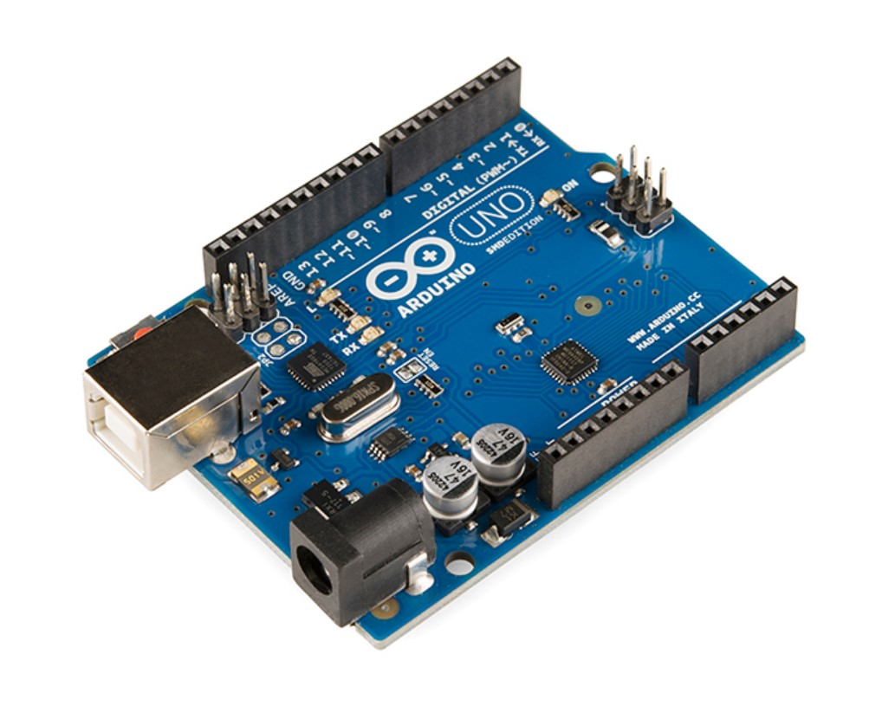

소프트웨어학과 32200536 김민성
나이 : 24 성별 : 남
취미 : 독서, 음악듣기, 게임
수원에 사는 김민성입니다.
고등학교 떄 아두이노를 배웠었는데, 아두이노를 코딩하는 과정에서 흥미가 생겼습니다
아두이노를 배우면서 선을 연결하고 결과를 보는것도 재밌었지만, 스크래치를 사용해서 같은 블럭이라도 다른 결과를 낼 수 있다는 것에 흥미를 느껴 코딩에 대해 알아보게 되었습니다
> 처음 접한 언어는 C언어로 처음에는 그대로 따라하면서 결과가 출력되는 것을 봤지만, 점점 내용이 복잡해지고, 결과를 통해 알아내는게 없었습니다
그렇게 아무런 비전 없이 여러 언어, 여러 프로그램을 수박 겉핥기식으로 해보다가, 고3 때 컴공말고도 소프트웨어학과가 있다는걸 알게 되었습니다
그 이후 대학의 진로를 고민하던 중 소프트웨어학과에 지원하게 되었고, 기능사 자격증을 따는 등 여러 시도를 해보고 있습니다
취미로는 게임, 책 읽기, 노래 듣기 등이 있습니다
게임이나 노래는 자연스럽게 많이 하게 되었지만, 책읽기는 군대를 다녀오고 나서 집에서도 책을 좀 읽자 해서 습관이 취미가 된 케이스입니다
책 읽기 시작한게 오래되지 않아 유명한 책 위주로 읽고 있으며, 최근 가장 재밌게 읽은 책은 도스토옙스키의 죄와벌입니다.

최근 일본 여행을 다녀왔습니다.
일본 오사카를 갔었고, 여러 관광지를 돌아다녔습니다
일본 유니버셜 스튜디오에서 찍은 영상입니다. 여러 어트랙션을 즐겼습니다